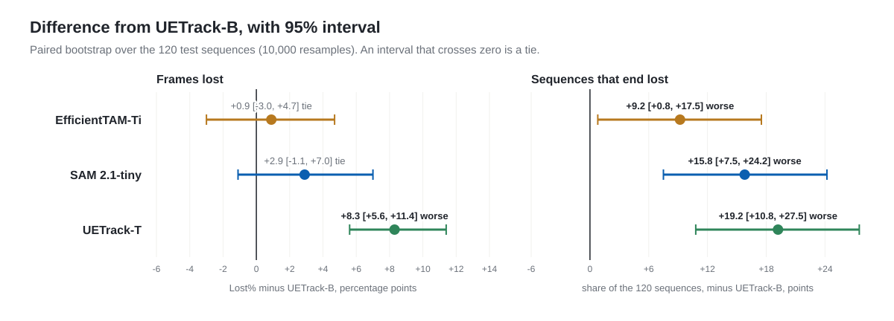
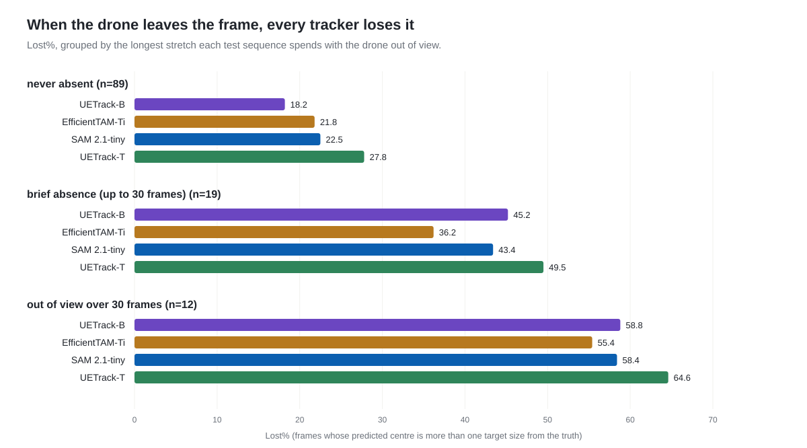
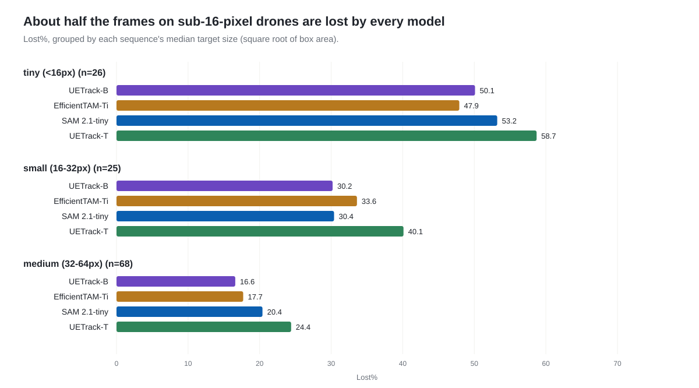

Measured, Not Reported: Four Edge Trackers on Anti-UAV410
In June I wrote a review of 2026 edge trackers built entirely from numbers the authors reported, and said so at the bottom: always benchmark on your own data before committing. This is that benchmark. I ran four of the trackers under one protocol on Anti-UAV410, the public thermal-infrared anti-drone benchmark, and the result is not the ranking any leaderboard would give you.
The benchmark
Anti-UAV410 (Huang et al., TPAMI 2023) is 410 thermal videos of drones at 640×512, one target per sequence, split 200 train / 90 val / 120 test. I used the test split: 120 sequences, 129,691 frames.
It is a hard benchmark for reasons that matter in practice:
- The targets are small. Almost half of all test frames (64,053) belong to sequences whose median target is under 32 pixels across, and 26 sequences have a median target under 16 pixels.
- The drone leaves the frame. In 31 of the 120 sequences the target is out of view at some point; in 12 it is gone for more than 30 frames, and in one for 253.
- Thermal has little texture. A drone is a warm blob against sky, cloud, or tree line, with none of the colour and edge detail RGB trackers are pre-trained on.
The protocol
Every tracker gets the same thing: the ground-truth box on frame 0, and nothing after that. No re-prompting, ever — including when the drone flies out of view and comes back. Losing the target and picking it up again is precisely what this dataset tests, and re-prompting on its return would hand the tracker the answer.
I don't lead with AUC, because it blends two different failures into one number: a tracker that drifts slightly all the time and one that holds the target perfectly and then loses it for good can land on the same score. I report three measures instead, and AUC and precision alongside for comparison:
- Lost% — the fraction of frames where the predicted centre is more than one target size (square root of box area, floored at 8 px) from the true centre. Distance, not overlap: on a 6-pixel drone a 4-pixel offset has zero IoU and is still a perfectly good lock.
- Accuracy — mean IoU over the frames that are not lost. Box quality, with the question of whether the tracker is on target at all factored out.
- Ends lost — the number of sequences whose final lost stretch runs to the last frame and lasts at least 30 frames. The tracker lost the drone and never got it back.
Frames where the drone is out of view are skipped rather than scored. That makes these numbers not comparable to Anti-UAV's own published “state accuracy”, which also penalises a tracker for drawing a box when there is nothing to track. 49 test frames carry contradictory labels — marked visible with an empty box, or absent with a box — and those are skipped too.
The trackers
Four models, two families. Every configuration was fixed before this benchmark was run; nothing was tuned on Anti-UAV410.
- SAM 2.1-tiny — full-frame promptable video segmentation with a memory bank. It outputs a mask; I score its tight bounding box. facebookresearch/sam2
- EfficientTAM-Ti (512 px) — an efficient SAM 2-family model, run with a 7-slot memory bank whose recent memories are spaced 5 frames apart instead of being the last few frames. yformer/EfficientTAM
- UETrack-B and UETrack-T — crop-based bounding-box trackers built for edge deployment, the base and tiny variants of the model I picked as the best practical edge candidate in June. Stock settings. kangben258/UETrack
Results
| Model | Family | Lost% ↓ | Ends lost ↓ | Accuracy ↑ | AUC ↑ | Precision ↑ | Orin NX ms ↓ |
|---|---|---|---|---|---|---|---|
| UETrack-B | crop | 26.6 | 27 / 120 | 73.3 | 54.8 | 72.7 | 3.9 |
| EfficientTAM-Ti | full-frame | 27.4 | 38 / 120 | 68.1 | 49.6 | 72.2 | 29.9 |
| SAM 2.1-tiny | full-frame | 29.4 | 46 / 120 | 67.9 | 48.2 | 70.2 | — |
| UETrack-T | crop | 34.9 | 50 / 120 | 70.9 | 48.2 | 64.6 | 2.5 |
UETrack-B leads on every column. But with 120 sequences, a lead of one or two points can easily be noise, so I checked each gap with a paired bootstrap: resample the 120 sequences 10,000 times, keeping each model's result on the same sequence together, and see how often the gap survives.

Left: the loss-rate gaps between UETrack-B, EfficientTAM and SAM 2.1 are within noise. Right: the recovery gaps are not.
Four things hold up:
- Loss rate is a three-way tie. UETrack-B, EfficientTAM and SAM 2.1 lose the drone on statistically indistinguishable fractions of frames. Their 95% intervals against UETrack-B both cross zero. Don't rank them on Lost%.
- UETrack-B draws better boxes — about 5 points of IoU over both full-frame models, with intervals well clear of zero (−5.5 [−7.1, −3.8] for SAM 2.1, −5.2 [−6.9, −3.5] for EfficientTAM).
- UETrack-B gets the drone back. This is the result that should change a deployment decision. On the sequences where UETrack-B and SAM 2.1 disagree about how it ends, SAM 2.1 finishes lost and UETrack-B does not on 23; the reverse happens on 4. Same loss rate, very different endings.
- UETrack-T is clearly the weakest, on every measure, with every interval clear of zero.
Out of view breaks everyone
Split the test sequences by the longest stretch the drone spends out of frame:

Where the drone stays in frame, UETrack-B leads. Where it is gone for more than 30 frames, all four lose most of what follows.
Where the drone never leaves, the order is the headline one: UETrack-B loses 18.2% of frames, the other three 21.8–27.8%. Brief absences reshuffle it — EfficientTAM loses 36.2% against 43–50% for the rest — but that is 19 sequences, and I wouldn't lean on it.
On the 12 sequences where the drone is gone for more than 30 frames, every model loses 55–65% of the frames. None of them — memory bank or search crop — reliably reacquires a target that has left the frame on its own. That is the case for pairing any of these trackers with a re-detection loop, and on this benchmark such a loop would have a great deal of work to do.
Small targets are the other half of the problem

The one sequence with a target over 64 px is left out: one sequence is not a bucket.
Below 16 pixels, every model loses about half the frames. EfficientTAM does best there (47.9%), UETrack-T worst (58.7%) — and UETrack-T is the weakest in every size bucket, which is the price of its speed showing up exactly where the targets are hardest.
Latency on a Jetson Orin NX
Accuracy says which tracker holds the drone; an edge budget says which ones
you can afford. I built each network as a TensorRT fp16 engine on a
Jetson Orin NX 16GB (MAXN power mode, JetPack 6.2,
TensorRT 10.3) and timed it with trtexec: batch 1, static
shapes, 25 seconds after a 2-second warm-up, mean GPU compute time.
| Model | ms / frame | FPS | What is timed |
|---|---|---|---|
| UETrack-T | 2.5 | 397 | one engine: encoder + box head |
| UETrack-B | 3.9 | 257 | one engine: encoder + box head |
| EfficientTAM-Ti | 29.9 | 33 | four engines, with the 7-slot memory bank benchmarked above; memory attention alone is 18.3 ms |
| SAM 2.1-tiny | — | — | not measured: its video predictor has no static TensorRT export in my setup |
Two things follow. UETrack-B's speed is no reason to pick anything else: it costs 1.4 ms a frame more than UETrack-T, and both fit in a 30 fps camera budget eight times over or more. And EfficientTAM barely fits: at 29.9 ms it uses the whole budget for a 30 fps stream before cropping, pre-processing or anything else runs. Shrinking its memory bank to 4 slots brings it to 23.2 ms — but that is not the configuration measured here, and a smaller bank usually costs some recovery.
These are the networks alone. Cropping and resizing, pre- and post-processing, and the host-side bookkeeping of EfficientTAM's memory bank come on top. That is also why they are not comparable with the 60 FPS the UETrack paper reports for UETrack-B on a Jetson AGX Xavier in my June table: a different device, and a whole tracking loop rather than one engine.
Back to the June recommendations
The review made three calls. Measured on this benchmark:
“Start with UETrack-B if accuracy matters” — holds.
Best boxes, best recovery, and tied for the lowest loss rate. It is the only model here with no column where something else is clearly better — and at 3.9 ms a frame on an Orin NX, speed is no argument against it.
“UETrack-T if latency is the main constraint” — only if you run many tracks.
On small thermal targets its speed is not free: 8.3 points more frames lost than UETrack-B and 23 more sequences that end lost. And on an Orin NX the speed it buys is small — 2.5 ms against 3.9 — with both far inside a 30 fps budget. It pays off when one module has to carry many tracks at once. If you ship it, ship it with a re-detection path.
“Don't start with SAM 2 unless you need masks” — holds.
For bounding boxes, SAM 2.1 is no better at holding the target, 5.5 points worse on box quality, and the most likely of the three strong models to end a sequence lost. Its memory bank does not buy reacquisition here. EfficientTAM, the efficient model from the same family, is statistically tied with it on both loss rate and box quality. It ended fewer sequences lost (38 against 46), but head to head that gap is borderline — and EfficientTAM ran with its memory spaced out, a setting SAM 2.1 was not given.
What this does not show
- One benchmark, one modality. Thermal drones against sky and clutter. On colour video, or on targets the camera is actively following, the order can change — and does, on other data I have run these same models on.
- Engine-only latency, and none for SAM 2.1. The Orin numbers time the networks alone. The accuracy numbers come from PyTorch runs on a desktop GPU, not from the Orin's fp16 engines; the UETrack-T and EfficientTAM engines have been checked against PyTorch output, while the UETrack-B engine was built for this post and so far only timed.
- No re-detection. Every tracker ran alone. The out-of-view result says that is exactly the gap a real system has to close.
- Not Anti-UAV's own metric. Out-of-view frames are skipped, not scored, so these results sit beside the published Anti-UAV410 leaderboard, not on it.
Where this fits. This is the measured follow-up to The Future of Edge Tracking: 2026 SOTA Single Object Tracking Review, which compared these and other trackers on their reported numbers. The dataset is Anti-UAV410 (Huang et al., Anti-UAV410: A Thermal Infrared Benchmark and Customized Scheme for Tracking Drones in the Wild, TPAMI 2023). Every number in this post and its figures comes from one exported results file, data.json.